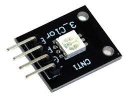

El capitán Lastimosa viene a ayudar a Cooper y lo lleva a salvo, pero se ve abrumado por los Apex Predators, un equipo de mercenarios cualificados , dirigidos por Kuben Blisk, que trabaja para la IMC. Lastimosa es herido mortalmente y su Titán, BT-7274, queda incapacitado. Severamente herido, Lastimosa transfiere la autorización de BT a Cooper y le da su casco, armadura y kit de salto antes de sucumbir a sus lesiones. Después de que Cooper restaure el poder al Titán dañado, BT le explica la misión de Lastimosa: Operación especial 217; reunirse con el Mayor Anderson, el comandante de la misión, y ayudarlo en la finalización de su asignación original.
Después de deshacerse de los mercenarios -de Blisk y llegar a la última posición conocida de Anderson, Cooper y BT encuentran el cuerpo de Anderson en una instalación de investigaciones abandonada de la IMC, la mitad inferior de su cuerpo por encima del suelo de la segunda planta y la mitad superior de su cuerpo por debajo del techo de la primera planta.

Después de ver el informe de la misión de Anderson entregado por Sarah Briggs, Cooper y BT descubren que a Anderson se le dio un dispositivo montado en la muñeca para ayudarlo a navegar por las instalaciones, lo que le permitió viajar de un lado a otro simplemente apretando el puño.
Cooper encuentra la otra mitad del cadáver de Anderson y equipa el dispositivo. Se descubre el horrible experimento que la IMC estaba llevando a cabo en el laboratorio: se había desarrollado una súper arma conocida como "Arma de Doblez", que utiliza tecnología de desplazamiento en el tiempo. Esta arma se pretende utilizar para destruir todos los planetas ocupados por las milicias, entre ellos Harmony, hogar de varios millones de civiles y cuartel general de la Milicia, que es el primer objetivo. Cooper también descubre que la tecnología de desplazamiento depende de una fuente de energía conocida como el Arca, y que es una versión reducida del prototipo del arma que destruyó el laboratorio inicialmente. Cooper y BT deciden transmitir una señal a la flota de la Milicia para iniciar un contraataque antes
import RPi.GPIO as GPIO
import time
GPIO.setmode(GPIO.BCM)
# Define los pines GPIO para los colores R, G y B del KY-009
red_pin = 17
green_pin = 27
blue_pin = 22
# Configura los pines como salidas
GPIO.setup(red_pin, GPIO.OUT)
GPIO.setup(green_pin, GPIO.OUT)
GPIO.setup(blue_pin, GPIO.OUT)
# Enciende el LED en rojo
GPIO.output(red_pin, GPIO.HIGH)
GPIO.output(green_pin, GPIO.LOW)
GPIO.output(blue_pin, GPIO.LOW)
time.sleep(1)
# Enciende el LED en verde
GPIO.output(red_pin, GPIO.LOW)
GPIO.output(green_pin, GPIO.HIGH)
GPIO.output(blue_pin, GPIO.LOW)
time.sleep(1)
# Enciende el LED en azul
GPIO.output(red_pin, GPIO.LOW)
GPIO.output(green_pin, GPIO.LOW)
GPIO.output(blue_pin, GPIO.HIGH)
time.sleep(1)
# Apaga el LED
GPIO.output(red_pin, GPIO.LOW)
GPIO.output(green_pin, GPIO.LOW)
GPIO.output(blue_pin, GPIO.LOW)
# Limpia la configuración de los pines GPIO
GPIO.cleanup()
Realizado por Christopher Eduardo Barrientos Guerra